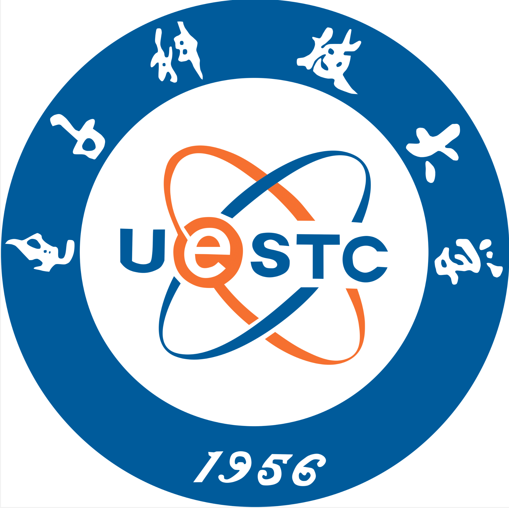

Steering Committee
To be announced
29th International Conference on
Information and Communications Security
Chengdu City Concert Hall · Photo: MspreilsCN / Wikimedia Commons (CC0)
About
The 29th International Conference on Information and Communications Security (ICICS 2027) will be held in Chengdu, China.
Established in 1997, ICICS is an annual international forum for researchers and practitioners to present and discuss advances in information and communications security. ICICS 2027 continues this tradition with a focused technical programme and peer-reviewed research contributions.

Schedule
ICICS 2027 is expected to follow the two-cycle review model used by recent editions. The dates below will be updated after the call for papers is issued.
| Milestone | First cycle | Second cycle |
|---|---|---|
| Paper submission | To be announced | To be announced |
| Author notification | To be announced | To be announced |
| Camera-ready version | To be announced | |
| Conference | To be announced | |
All deadlines will use 23:59 Anywhere on Earth (AoE) unless stated otherwise.
Call for Papers
Submissions are invited on all aspects of information and communications security. The preliminary scope, based on recent ICICS calls, includes but is not limited to:
For Authors
People
To be announced
To be announced
To be announced
To be announced
Chengdu, China
ICICS 2027 will take place in Chengdu, the capital of Sichuan Province and home to the University of Electronic Science and Technology of China. The conference venue and practical travel information will be published after arrangements are confirmed.